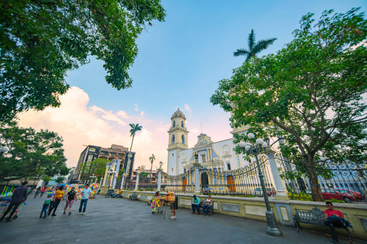

Descubriendo Córdoba: Una Ciudad Rica en Historia
Córdoba, Veracruz, es una ciudad con una profunda historia que se refleja en su arquitectura, su gente y sus tradiciones. En esta entrada del blog, exploraremos algunos de los aspectos más interesantes de esta ciudad, conocida por su rol clave durante la época colonial y su proximidad al majestuoso Pico de Orizaba, el pico más alto de México.
Desde el Centro Histórico hasta las montañas que rodean la ciudad, Córdoba ofrece a los viajeros una mezcla única de historia y naturaleza. El Parque 21 de Mayo, una de las principales atracciones turísticas, es el lugar perfecto para disfrutar de un día en familia, con espacios verdes y actividades recreativas.
Además, no puedes perderte el Palacio Municipal de Córdoba, un edificio emblemático que representa la riqueza arquitectónica de la época colonial. También te recomendamos visitar la iglesia de San José, que data del siglo XVIII y es un claro ejemplo del arte barroco en la región.
Córdoba es un destino que invita a ser explorado con calma, disfrutando de sus rincones históricos, su gastronomía y la amabilidad de su gente. Si te apasiona la historia y la naturaleza, este lugar es ideal para tu próxima escapada.